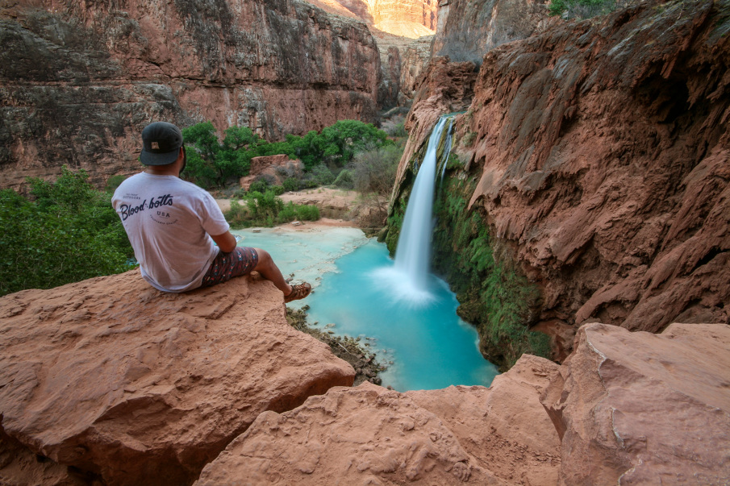

My name is Matthew Ord.
I'm going to school for Environmental Science and Photography. I'm from Southern California and my goal as a landscape photographer is to inspire people through photographs to get out of their house and into the wild. In our world today its easy to get caught up with technology, social media and iPhones its no wonder we're labeled as the laziest generation in history. With all these distractions we neglect the importance that nature holds. People are missing out on these profound moments of peace, happiness, and wellness that can only be absorbed by placing oneself within the environment. Contact with nature is an crucial part of our well-being as human beings. Life is too short and there's too much to see.
